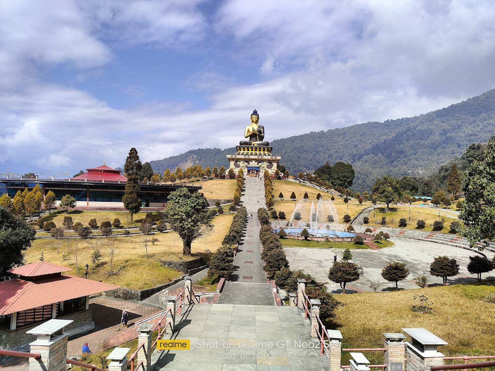
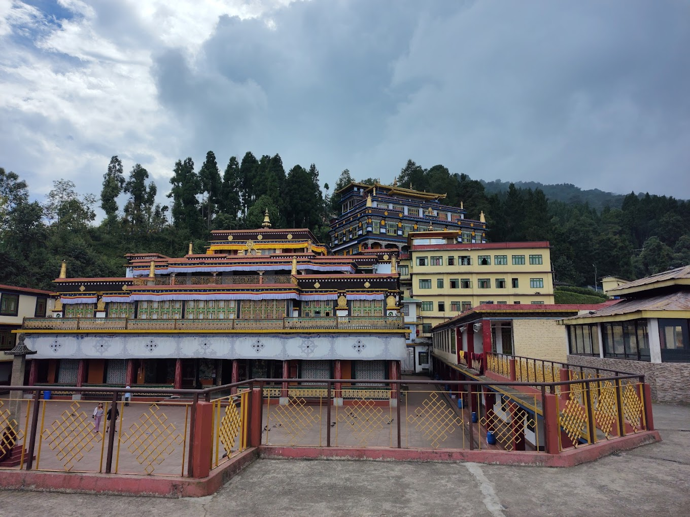

Buddha Park The Buddha Park of Ravangla, also known as Tathagata Tsal, is situated near Ravangla in South Sikkim district of the Indian state of Sikkim. It was constructed between 2006 and 2013, and features a 130-foot-high (40 m) statue of the Buddha, erected to mark the 2550th anniversary of the birth of Gautama Buddha, as its main attraction. The statue, built of 60 tonnes of copper, is an example of repousse work.
The Buddha Park is located approximately 1 kilometre (0.62 mi) north of the city of Ravangla, in the South Sikkim district of India's Sikkim state. The city of Ravangla is connected by road, rail and air

Rumtek Dharma Chakra Center Rumtek Monastery , also called the Dharma Chakra Centre, is a gompa located in the Indian state of Sikkim near the capital Gangtok. It is the seat-in-exile of the Gyalwang Karmapa, inaugurated in 1966 by the 16th Karmapa. It is also a focal point for the sectarian tensions within the Karma Kagyu school of Tibetan Buddhism that characterize the 17th Karmapa controversy.
Originally built under the direction of Changchub Dorje, 12th Karmapa Lama in the mid-18th century,[1] Rumtek served as the main seat of the Karma Kagyu lineage in Sikkim for some time. But when Rangjung Rigpe Dorje, 16th Karmapa, arrived in Sikkim in 1959 after fleeing Tibet, the monastery was in ruins.

Hanuman Tok Hanuman Tok is a Hindu temple complex which is located in the upper reaches of Gangtok, the capital of the Indian state of Sikkim. The temple is dedicated to lord Hanuman, and maintained by the Indian army. It was established in 1952.According to the local legends, when Hanuman was flying to Dunagiri (mountain) which had the life saving herb Sanjeevani to save Lord Rama's brother Lakshmana, he rested in the spot for some time where his temple now lies.